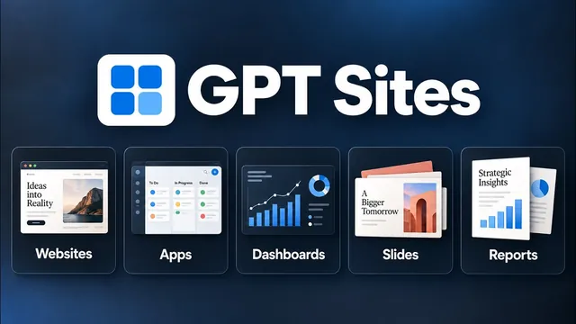

GPT-6 + GPT Sites, 이제 뭐든 만들 수 있다

원본 영상 보기 →
- 강력한 모델일수록 첫 프롬프트가 비용을 좌우해요
- '만들기'보다 '돌아가게 두기'가 진짜 가치예요
- 광고 많고 불편한 SaaS는 이제 직접 대체할 수 있어요
한 줄 요약
Ben AI 채널의 Ben이 ChatGPT의 새 플러그인 'Sites'로 다섯 가지를 직접 만들어 보여 줍니다. 웹사이트, 내부 앱, 자동 보고서, 대화형 프레젠테이션, 자동 갱신 대시보드예요. 그리고 GPT-6 Astra 같은 강력한 모델에서 한 번에 좋은 결과를 뽑는 프롬프트 작성법까지 정리합니다.
전체 내용 정리
Sites는 채팅 안에서 웹사이트와 앱을 만드는 플러그인이에요
Ben은 ChatGPT의 새 플러그인 'Sites'로 웹사이트, 대시보드, 프레젠테이션, 전체 앱까지 쉽게 만들 수 있다며 5가지 사례를 소개합니다.
기능을 더 많이 쓰려면 ChatGPT 데스크톱 앱을 추천해요. 앱에서 상단 'work' 탭을 선택하면 측면 패널에 'sites'가 나타납니다. 이 패널에서 만든 웹사이트와 앱, 대시보드를 모두 관리하고 공유할 수 있어요.
사용법은 간단합니다. 채팅창에 @sites를 입력해 플러그인을 선택하기만 하면 돼요. ChatGPT 팀 플랜이라면 공유 설정을 '워크스페이스 내 링크가 있는 누구나'로 바꿔서 팀원 모두의 Sites 탭에 결과물이 나타나게 할 수 있습니다.
사례 1: 랜딩 페이지는 다섯 가지를 담은 프롬프트 한 번으로
Ben은 Sites로 자기 회사 홈페이지를 다시 만들었는데, 대부분 프롬프트 한 번과 몇 번의 반복 수정으로 완성했다고 해요. 디자인, 레이아웃, 문구, 애니메이션 모두 만족스러웠고요.
웹 디자인에는 디자인 능력이 뛰어난 GPT-6 Astra를 추천합니다. 그리고 중요한 포인트를 짚어요. 이렇게 강력한 모델일수록 첫 프롬프트에 공을 들여야 여러 번 반복하며 토큰을 낭비하지 않습니다.
그가 권하는 다섯 가지 요소는 이렇습니다.
첫째, 왜 이 작업을 하는지 설명하세요. 그는 "지금 사이트가 너무 기본적이라 더 존재감 있는 페이지를 원한다", "내 얼굴 사진을 넣고 싶다"며 사업 맥락까지 줬어요.
둘째, 브랜드 가이드라인을 주세요. 브랜드 색상, 로고, 에셋이 담긴 것들이요. 그는 프로젝트 안에서 채팅을 열어 디자인 가이드와 로고가 든 폴더 접근 권한을 줬습니다. 가이드가 없다면 Sites 플러그인으로 "우리 회사를 위한 design.md 파일을 만들고 싶어"라고 요청해서 만들 수 있어요.
셋째, 마음에 드는 디자인의 참조 링크나 이미지를 넣으세요. GPT-6는 시각적 참조를 잘 따르니까요. Dribbble에서 찾은 이미지나 Framer 템플릿을 추천합니다.
넷째, 넣고 싶은 섹션이 있으면 지정하세요. Ben은 기존 요소는 유지하고 레이아웃과 디자인만 바꾸라고 했어요.
다섯째, 프롬프트 끝에 '작업 완료 기준'을 정의하세요. 최신 모델은 너무 적게 하기보다 너무 많이 하는 경향이 있어서, 완료 기준이 없으면 계속 작업하며 토큰을 낭비합니다.
수정은 '주석' 기능으로, 배포는 내 도메인으로
Ben의 요청은 약 11분 만에 첫 결과물로 나왔고, 라이브 URL이나 ChatGPT의 사이트 창에서 바로 열어 볼 수 있었습니다.
첫 결과물도 인상적이었지만 보통은 몇 번의 수정이 필요하죠. Sites에는 '주석(annotate)' 옵션이 있어서, 메뉴처럼 바꾸고 싶은 요소를 선택하고 원하는 변경을 설명하면 ChatGPT가 무엇을 고칠지 정확히 파악해요.
Ben은 이 기능으로 메뉴 항목과 색상을 바꾸고, 텍스트를 선택해 스크롤 애니메이션이나 페이드 인 효과를 넣어 달라고 하는 식으로 다섯~여섯 번 수정해 최종 버전을 완성했습니다.
기본적으로는 GPT 호스팅 링크에 올라가지만, 측면 패널의 Sites에서 사이트를 클릭하고 설정으로 들어가면 사용자 지정 도메인에 바로 연결할 수 있어요.
사례 2: 기존 소프트웨어를 대체하는 내부 앱
Sites에는 데이터베이스, 분석, 환경 변수와 자격 증명이 내장돼 있습니다. 그래서 내부 앱을 만들어 출시하거나 기존 소프트웨어를 대체할 수 있어요.
Ben의 팀은 기존 썸네일이나 남의 썸네일 템플릿을 내려받아 새 영상 제작에 자주 씁니다. 그런데 쓰던 유튜브 썸네일 다운로드 앱이 불편했어요. 광고가 너무 많고 느렸으며, 한 번에 링크 하나만 넣을 수 있었고, 받은 썸네일을 일일이 폴더로 끌어다 놔야 했거든요.
그래서 이렇게 요청했습니다. 만들고 싶은 앱을 설명하고, 썸네일을 저장할 드라이브 폴더를 지정하고, 기존 앱 링크와 부족한 점을 알려 주고, design.md로 브랜드 스타일을 쓰라고요.
11분 만에 전체 앱이 완성됐어요. 이제 한 번에 최대 100개 링크를 넣어 바로 렌더링하고 원하는 드라이브 폴더에 저장합니다.
다만 주의할 점이 있어요. 이 앱은 ChatGPT 밖에서 도는 별도 앱이라 구글 관련 플러그인이 작동하지 않아서, 연결과 접근 권한을 직접 설정해야 했습니다. 대부분의 앱은 해당 서비스 설정에서 API 키를 만들어 ChatGPT에 주고 연결을 설정하라고 하면 환경 변수에 자격 증명이 저장돼요. 구글 드라이브는 조금 더 까다롭지만 이 과정도 ChatGPT의 도움을 받을 수 있고요.
사용자, 붙여넣은 링크, 저장한 썸네일 같은 정보를 기억할 데이터베이스도 자동으로 설정됩니다. 예전처럼 Supabase나 Airtable 같은 외부 서비스 없이 Sites 안에서 상용 수준의 앱을 만들어 배포할 수 있어요.
사례 3: 고객 통화 녹취를 읽어 매주 보고서를 만들어요
Sites로 영업·마케팅·사내 보고서를 대시보드 형태로 자동화하고, 매주 또는 매월 자동 실행되게 예약할 수 있습니다.
Ben은 대규모 데이터 분석에 탁월한 GPT-6 Astra로 지난 한 달간의 커뮤니티 지원 통화를 분석해 고객 인텔리전스 보고서를 만들었어요. 먼저 회의 녹취 도구 Fireflies를 플러그인 섹션에서 ChatGPT와 연결해 녹취록을 불러오게 했고, 역할 부여·무엇이 중요한지·가이드라인·결과물 형태를 담아 프롬프트를 썼습니다.
여기서 중요한 팁이 하나 나와요. 방대한 데이터를 다룰 때는 하위 에이전트(sub-agent)는 항상 더 저렴한 GPT-5.6으로 돌리라고 지시하세요. 저렴한 모델이 텍스트와 녹취록을 읽고, GPT-6는 최종 보고서만 쓰게 되는 구조입니다.
그 결과 32분 동안 고객 지원 통화 116건을 분석했어요. 고객의 주요 고충 기반 영상 아이디어 목록, 액셀러레이터와 커뮤니티 개선을 위한 우선순위 작업 목록, 포괄적인 고객 프로필 분석이 담긴 보고서와 대시보드를 한 번에 만들었고, 각 포인트는 실제 통화 녹취록 참조로 뒷받침됐습니다.
이후 매주 지난주 통화 녹취록 전체로 이 보고서를 만들도록 예약 작업을 설정했고, 팀과 공유해서 모든 팀원이 측면 패널 Sites 탭에서 최신 고객 보고서를 봅니다.
사례 4: 대화형 프레젠테이션을 스킬로 재사용해요
Ben의 팀은 이제 Sites로 영업 통화용 대화형 슬라이드 덱을 만들어 씁니다. 리드나 기업마다 개인화하기도 쉽고요. 리드들은 매우 전문적으로 보인다며 좋은 반응을 보였고, 내부 회의에서도 모두가 이런 프레젠테이션으로 진행 상황을 공유하면서 회의가 더 생산적으로 바뀌었다고 해요.
특정 리드와의 후속 통화용으로 13페이지 슬라이드 덱을 요청하면서, 기존 영업 덱과 design.md가 있는 폴더 접근 권한을 줘서 브랜드 가이드라인과 따라야 할 구조를 이해하게 했습니다.
이 사례에서 추천하는 프롬프트 요소는 모든 슬라이드에 '점진적 공개(progressive disclosure)'를 넣으라는 거예요. 그래야 슬라이딩 효과가 생깁니다. 마음에 드는 슬라이드 템플릿 이미지나 링크, '완료' 기준도 함께 넣고요.
주석 기능으로 다듬은 뒤 결과가 마음에 들면 이렇게 요청하세요. "이 워크플로우를 스킬로 만들어서 새 프레젠테이션이 항상 이 레이아웃으로 나오게 해 줘." 그러면 새 리드마다 같은 스타일과 구조의 맞춤 영업 덱을 뽑을 수 있습니다.
내부 회의 때는 Whisper Flow 같은 음성 전사 도구로 논의할 내용과 진행 상황을 길게 말해 두고, 그 내용을 Sites로 프레젠테이션으로 정리해 회의 자료로 써요.
사례 5: 매일 아침 자동으로 갱신되는 대시보드
Ben이 가장 좋아하는 사례입니다. 항상 최신 정보로 자동 업데이트되는 데이터 분석 대시보드예요.
플러그인으로 여러 소프트웨어를 연결하면 서로 다른 소스의 데이터를 결합한 대시보드를 만들 수 있고, 간단한 예약 작업으로 늘 최신 상태를 유지합니다.
그는 유튜브 채널과 영상 성과 대시보드를 만들어서 영상별 전환율처럼 여러 소스를 합쳐야만 나오는 지표를 봐요. 실시간 링크로 배포해서 팀원 누구나 최신 분석을 확인하게 했고요.
프롬프트에는 이런 걸 담았습니다. 원하는 대시보드 종류, 데이터 출처(VidIQ 플러그인의 유튜브 데이터와 분석 소프트웨어 Post Haste의 전환 데이터), 대시보드를 만드는 이유(어떤 지표를 넣고 뺄지 판단하게 하는 중요한 단계예요), Dribbble에서 찾은 대시보드 참고 스크린샷. 그리고 Sites 플러그인과 함께 데이터 분석 성능을 높여 주는 ChatGPT 내장 데이터 플러그인을 추가했어요.
대시보드는 한 번에 나왔고 공유한 이미지의 레이아웃과 정확히 일치했습니다. 이어서 "매일 아침 9시에 최신 데이터로 이 대시보드를 업데이트하는 예약 작업을 만들어 줘"라고 요청해 자동 갱신까지 설정했어요.
핵심 인사이트
- 강력한 모델일수록 첫 프롬프트가 비용을 좌우해요: 작업 이유·브랜드 가이드·참조 디자인·섹션·완료 기준 다섯 가지를 처음부터 넣으면 한 번에 좋은 결과가 나와서 반복 수정과 토큰 낭비가 줄어듭니다. 특히 '완료 기준'이 없으면 GPT-6 같은 모델은 멈추지 않고 일을 더 해요.
- '만들기'보다 '돌아가게 두기'가 진짜 가치예요: 보고서나 대시보드를 한 번 만든 뒤 매주·매일 예약 작업으로 걸어 두면, 예전엔 시간이 없어 엄두도 못 내던 고객 분석과 성과 추적이 사람 손 없이 계속 쌓입니다.
- 광고 많고 불편한 SaaS는 이제 직접 대체할 수 있어요: 데이터베이스·환경 변수·배포가 내장되면서 외부 서비스 없이도 팀 전용 내부 앱을 11분 만에 만들 수 있게 됐습니다. 기존 앱 링크와 불만 사항만 알려 줘도 맥락이 충분해요.
오늘 당장 해볼 것
- 매주나 매월 사람이 손으로 만들고 있는 보고서를 하나 골라, 어떤 자료를 모아 어떤 결론을 내는지 한 장에 적어 보세요. 상담 기록 요약이든 매출 현황이든요.
- 자동화를 맡긴 업체에 "이 보고서를 대시보드 링크로 만들고 매주 자동으로 갱신되게 할 수 있는지", "대량 자료를 읽는 부분은 더 저렴한 모델로 돌려 비용을 줄일 수 있는지" 물어보세요.
- 광고가 많거나 한 번에 하나씩만 처리돼 불편한 업무용 도구를 하나 떠올리고, 불편한 점과 있었으면 하는 기능을 목록으로 적어 두세요. 내부 앱 제작을 맡길 때 이 목록이 그대로 요구사항이 됩니다.